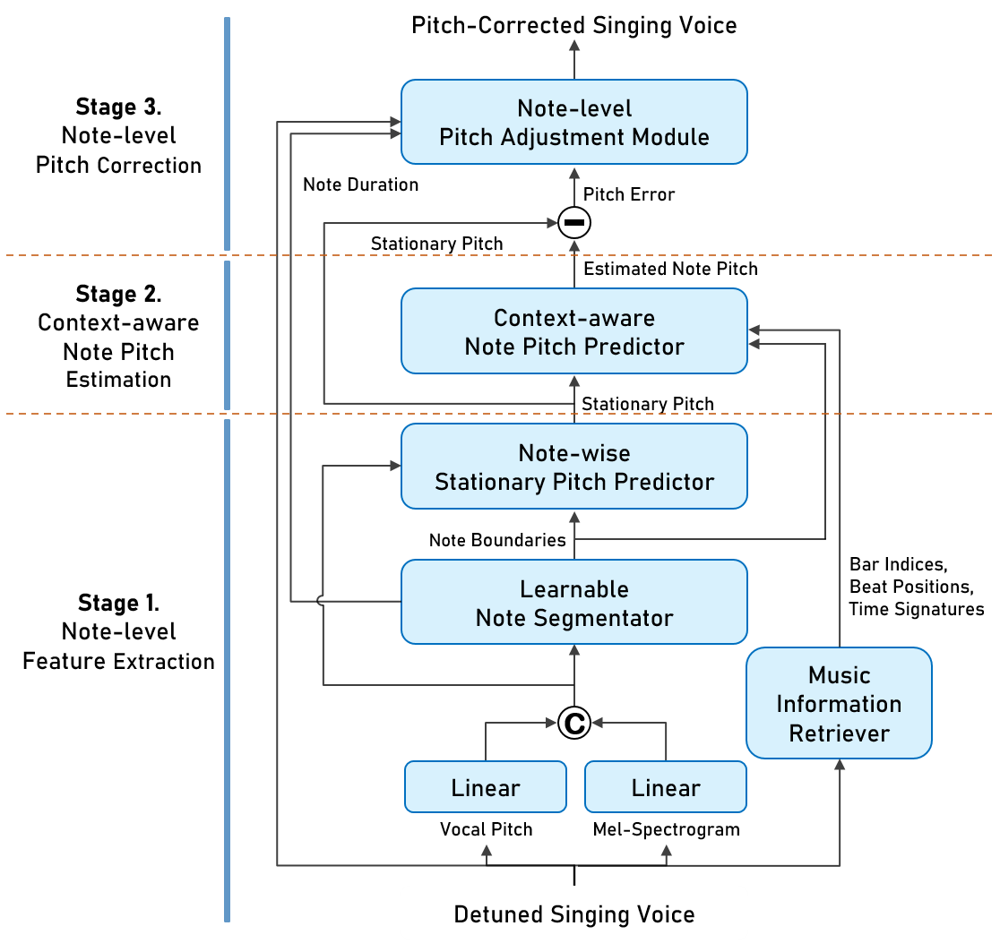

BERT-APC: A Reference-free Framework for Automatic Pitch Correction via Musical Context Inference
Sungjae Kim, Kihyun Na, Jinyoung Choi, and Injung Kim
Abstract
Automatic Pitch Correction (APC) enhances vocal recordings by aligning pitch deviations with the intended musical notes. However, existing APC systems either rely on reference pitches, which limits their practical applicability, or employ simple pitch estimation algorithms that often fail to preserve expressiveness and naturalness. We propose BERT-APC, a novel reference-free APC framework that corrects pitch errors while maintaining the natural expressiveness of vocal performances. In BERT-APC, a novel stationary pitch predictor first estimates the perceived pitch of each note from the detuned singing voice. A context-aware note pitch predictor estimates the intended pitch sequence by leveraging a music language model repurposed to incorporate musical context. Finally, a note-level correction algorithm fixes pitch errors while preserving intentional pitch deviations for emotional expression. In addition, we introduce a learnable data augmentation strategy that improves the robustness of the music language model by simulating realistic detuning patterns. Compared to two recent singing voice transcription models, BERT-APC demonstrated superior performance in note pitch prediction, outperforming the second-best model, ROSVOT, by 10.49%p on highly detuned samples in terms of the raw pitch accuracy. In the MOS test, BERT-APC achieved the highest score of 4.30 ± 0.16, which is significantly higher than those of the widely-used commercial APC tools, Auto-Tune (3.20 ± 0.19) and Melodyne (3.07 ± 0.19), while maintaining a comparable ability to preserve expressive nuances. To the best of our knowledge, this is the first APC model that leverages a music language model to achieve reference-free pitch correction with symbolic musical context.
Model Architecture
Pitch Correction of Highly Detuned Singing Voices
Audio examples to demonstrate the performance of three pitch-correction systems on highly detuned singing voices. We recommend listening with earphones for clearer distinction.
Figure Legend
- Blue: original detuned vocal pitch before correction
- Orange: grount-truth (GT) note pitch (piano sound)
- Green: correction results of each APC system
Audio Sample Labels
Widely used commercial APC systems, AutoTune Pro and Melodyne, failed to correct sustained pitch deviations exceeding one semitone. (highlighted by red circles). In contrast, BERT-APC leverages a symbolic music language model trained on large symbolic music data to incorporate musical context, enabling accurate, natural correction even for extreme pitch errors.
Sample 1:
Before Correction
BERT-APC (Ours)
AutoTune Pro
Melodyne
Sample 2:
Before Correction
BERT-APC (Ours)
AutoTune Pro
Melodyne
Sample 3:
Before Correction
BERT-APC (Ours)
AutoTune Pro
Melodyne
Sample 4:
Before Correction

BERT-APC (Ours)
AutoTune Pro
Melodyne